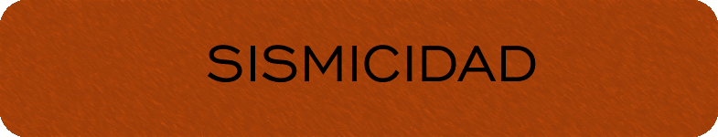
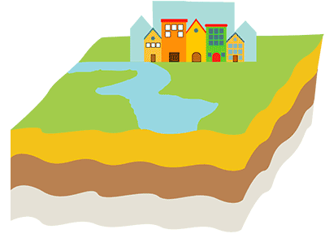
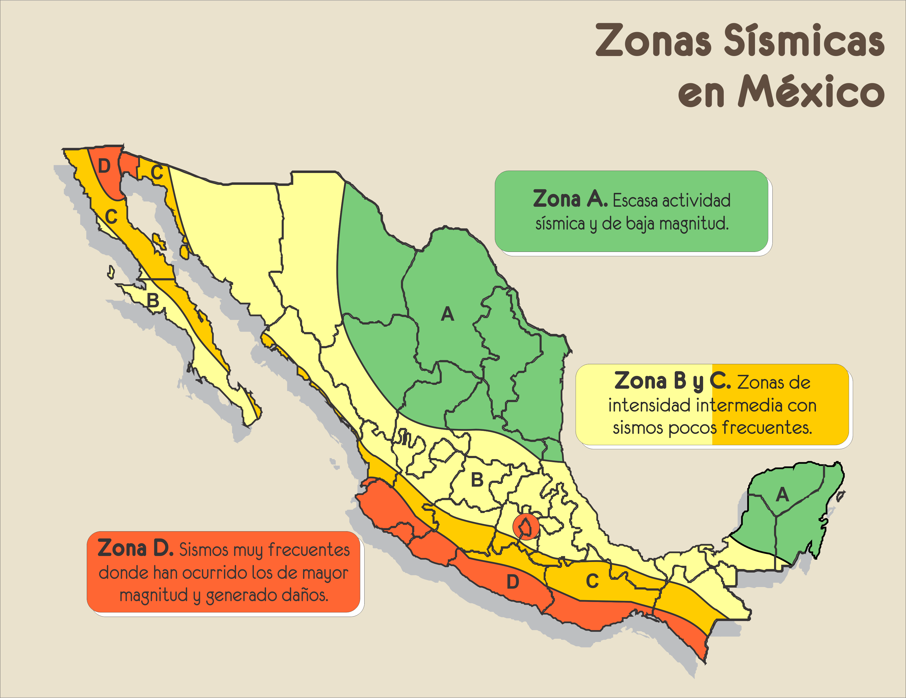

¿QUÉ ES LA SISMICIDAD?
La sismicidad es la capacidad que tiene una zona determinada de experimentar sismos. La sismicidad de una determinada zona geográfica se relaciona estrechamente con el choque y movimiento de placas tectónicas, lo que abre paso a la formación de sistemas montañosos y a que esta condición se repita con frecuencia sobre estas áreas.
A un sismo en la tierra se le suele llamar terremoto, y en el mar, maremoto o tsunami. Los sismos se puede clasificar de acuerdo a su origen: tectónico o volcánico; o de acuerdo al tipo de onda que predomina: oscilatorios y trepidatorios. Actualmente existen escalas para determinar su intensidad y nivel de destrucción, pues la sismicidad ha provocado interés en la población debido a que, gracias a los medios de comunicación, nos enteramos de los sismos que ocurren en el planeta y sus consecuencias.
La sismicidad es la capacidad que tiene una zona determinada de experimentar sismos. La sismicidad de una determinada zona geográfica se relaciona estrechamente con el choque y movimiento de placas tectónicas, lo que abre paso a la formación de sistemas montañosos y a que esta condición se repita con frecuencia sobre estas áreas.
A un sismo en la tierra se le suele llamar terremoto, y en el mar, maremoto o tsunami. Los sismos se puede clasificar de acuerdo a su origen: tectónico o volcánico; o de acuerdo al tipo de onda que predomina: oscilatorios y trepidatorios. Actualmente existen escalas para determinar su intensidad y nivel de destrucción, pues la sismicidad ha provocado interés en la población debido a que, gracias a los medios de comunicación, nos enteramos de los sismos que ocurren en el planeta y sus consecuencias.

Animación de un sismo.
¿QUÉ ES UN SISMO?
Un sismo es un movimiento vibratorio de la corteza terrestre de corta duración que se origina en el interior de la Tierra a partir de la liberación de energía que se ha acumulado, y se propaga en todas direcciones en forma de ondas (primarias, secundarias y superficiales). Desde que inicia y conforme se expande, toca diferentes puntos: el epicentro, el hipocentro o foco y el perímetro sísmico.
El epicentro es el punto en donde se manifiesta con mayor intensidad un sismo.
El hipocentro es el punto interno de la corteza terrestre donde se origina un sismo.
El perímetro sísmico se refiere al área de alcance sobre la superficie terrestre que tiene un sismo.
Un sismo es un movimiento vibratorio de la corteza terrestre de corta duración que se origina en el interior de la Tierra a partir de la liberación de energía que se ha acumulado, y se propaga en todas direcciones en forma de ondas (primarias, secundarias y superficiales). Desde que inicia y conforme se expande, toca diferentes puntos: el epicentro, el hipocentro o foco y el perímetro sísmico.
SISMICIDAD EN MÉXICO
La República Mexicana está situada en una de las regiones sísmicamente más activas del mundo, enclavada dentro del área conocida como el Cinturón Circumpacífico donde se concentra la mayor actividad sísmica del planeta.
La alta sismicidad en el país, es debida principalmente a la interacción entre las placas de Norteamérica, la de Cocos, la del Pacífico, la de Rivera y la del Caribe, así como a fallas locales que corren a lo largo de varios estados aunque estas últimas menos peligrosas.
La República Mexicana está situada en una de las regiones sísmicamente más activas del mundo, enclavada dentro del área conocida como el Cinturón Circumpacífico donde se concentra la mayor actividad sísmica del planeta.
La alta sismicidad en el país, es debida principalmente a la interacción entre las placas de Norteamérica, la de Cocos, la del Pacífico, la de Rivera y la del Caribe, así como a fallas locales que corren a lo largo de varios estados aunque estas últimas menos peligrosas.

Los datos para hacer este mapa se obtuvieron del Servicio Sismológico Nacional(Mayo 2018).
SISMOS EN MÉXICO 2017-2018
Se realizó una investigación de los sismos con magnitud mayor o igual a 4.5 registrados del periodo comprendido entre el 01-Septiembre-2017 y el 28-Febrero-2018.
El Servicio Sismológico Nacional tiene alrededor de 300 registros de sismos con estas características. Si se buscaran sismos de cualquier magnitud, con cualquier profundidad y en todos los estados de la República, el sistema arroja alrededor de 22,000 resultados; sin embargo, los sismos considerados más fuertes son regularmente de 4.5 grados o mayores, por lo que sólo nos enfocamos en estos.
En el mapa se puede observar que la mayor cantidad de sismos ocurrieron, efectivamente, en la Zona D de sismicidad del país.
Se realizó una investigación de los sismos con magnitud mayor o igual a 4.5 registrados del periodo comprendido entre el 01-Septiembre-2017 y el 28-Febrero-2018.
El Servicio Sismológico Nacional tiene alrededor de 300 registros de sismos con estas características. Si se buscaran sismos de cualquier magnitud, con cualquier profundidad y en todos los estados de la República, el sistema arroja alrededor de 22,000 resultados; sin embargo, los sismos considerados más fuertes son regularmente de 4.5 grados o mayores, por lo que sólo nos enfocamos en estos.
En el mapa se puede observar que la mayor cantidad de sismos ocurrieron, efectivamente, en la Zona D de sismicidad del país.
Además, al hacer la comparación entre las magnitudes de los sismos, los más fuertes son precisamente en donde hubo mayor concurrencia. Visualmente se puede observar en el mapa de calor a la derecha.
Mapa de calor de sismos registrados entre el 01-09-2017 y 28-02-2018.
¿Cuál es el estado con mayor número de sismos registrados?